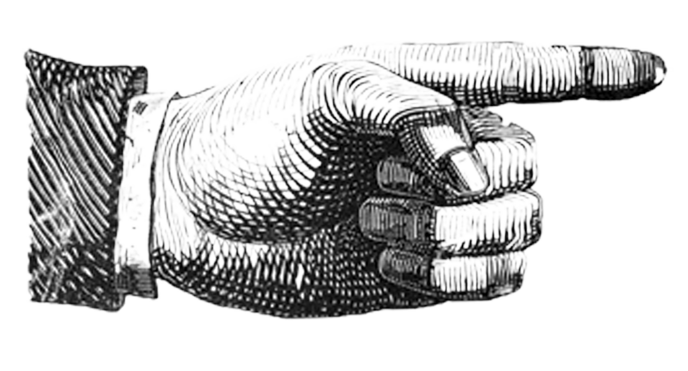
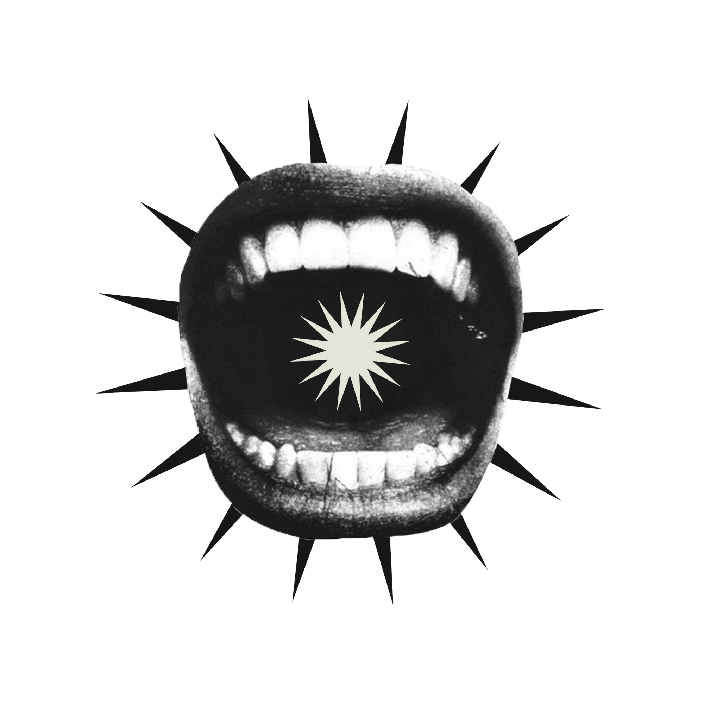

Guía de estilo
para colaboradorxs de

Última actualización: marzo de 2025
Bienvenidxs a ERUCTO, un espacio donde buscamos darle forma a las ideas. Este proyecto es un caos creativo que busca historias, estudios y un poco de todo. Queremos que cada colabración sea auténtica, irreverente y fiel a nuestra identidad. Por eso acá te dejamos algunos lineamientos para ayudarte a darle forma a las ideas con las que quieras ser parte.
ERUCTO es una productora interdisciplinaria que desarrolla, publica y difunde contenidos creativos, editoriales, audiovisuales y radiales. Apostamos a la libertad de expresión, el caos ordenado y la cultura independiente.
Buscamos colaboraciones en diferentes formas y formatos. Principalmente imágenes, audios o cualquier formato creativo que funcione en un contexto digital.
Nos interesan propuestas originales, experimentales, auténticas. Historias que cuestionen, provoquen, conmuevan.
No nos importa el género ni la temática, sino la mirada:
En este punto consideramos importante que sepas:
En ERUCTO abrimos convocatorias temáticas y por volumen. Esto significa que cada cierto tiempo proponemos un eje o disparador creativo, con una fecha límite para enviar aportes. Las convocatorias están pensadas como una forma de dialogar entre creadorxs y armar cada edición con identidad propia.
Importante Leé bien cada convocatoria: ahí indicamos los detalles específicos (tema, plazo, requisitos). Y si tenés dudas, escribinos. Te vamos a contestar, te juro.
Publicamos cada convocatoria en nuestras redes sociales y sitio web. Generalmente, vas a tener alrededor de un mes para preparar tu propuesta desde el anuncio.
Textos, imágenes, sonidos, collages, memes, afiches, animaciones, lo que se te ocurra. Todo formato es bienvenido mientras dialogue con la temática propuesta.
Si tu aporte no entra en la convocatoria actual tenés dos opciones: podés esperar la próxima o proponernos otro tipo de colaboración. Siempre estamos abiertxs a proyectos paralelos.
- Extensión sugerida: 1000 a 1500 palabras
- Formato: .docx o .pdf
- Formato: .jpg o .png (alta resolución)
- Incluir breve descripción
- Formato: .mp3 o .wav
- Formato: .mp4
Asegurate de que el material sea original y no infrinja derechos de terceros.
Si enviás material para publicación, garantizás que es original y no infringe derechos de terceros. ERUCTO se reserva el derecho de editar, adaptar o rechazar los envíos según criterios editoriales.
Nos reservamos el derecho de actualizar estos términos cuando nos plazca*. Si te interesa estar al tanto de cambios, pasate seguido.
*cuando lo consideremos necesario.
Tus aportes pueden formar parte de publicaciones físicas, digitales y/o promocionales, siempre acreditando tu autoría.
El contenido de la colaboración es tuyo: ERUCTO Sólo lo difunde en nuestras plataformas con tu permiso.
Desde ERUCTO podemos incluir dentro de las colaboraciones tus redes sociales, sólo tenés que avisarnos para que lo agreguemos junto con tu autoría
Podés participar de ERUCTO las veces que quieras y con los proyectos que desees, siempre y cuando vayan en línea con los valores de la producción y las temáticas de cada volumen.
ERUCTO no se hace responsable por:
Está permitido:
No está permitido:
Si tenés dudas, quejas, propuestas o memes:
📧 eructoverbal@gmail.com
Este es un espacio libre y colectivo. Queremos que disfrutes formar parte de ERUCTO tano como nosotrxs disfrutamos hacerlo posible.
¡Esperamos tu eruto creativo!
atte: equipo de ERUCTO
